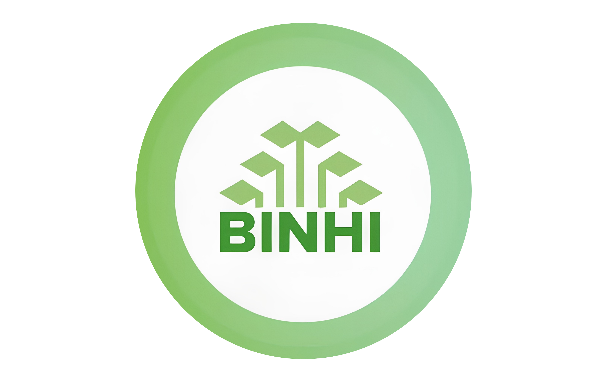
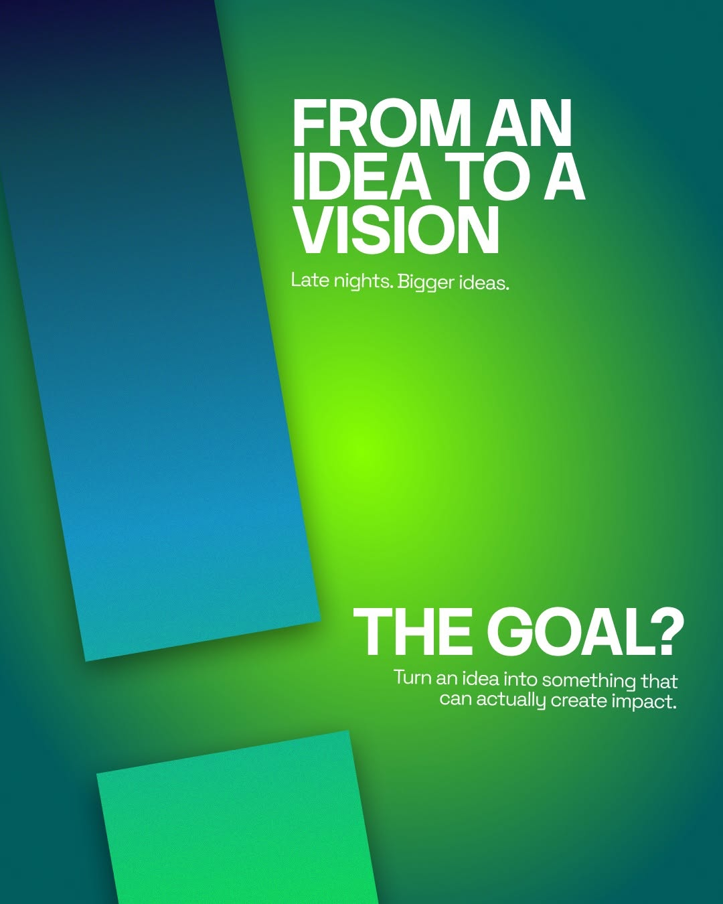
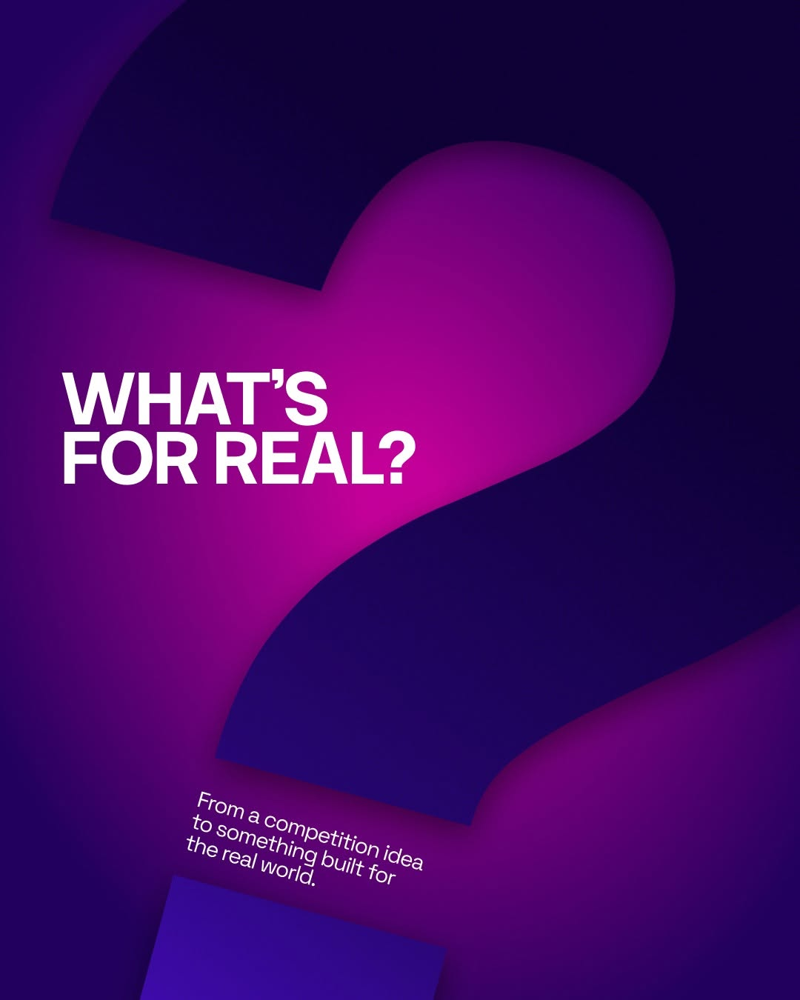
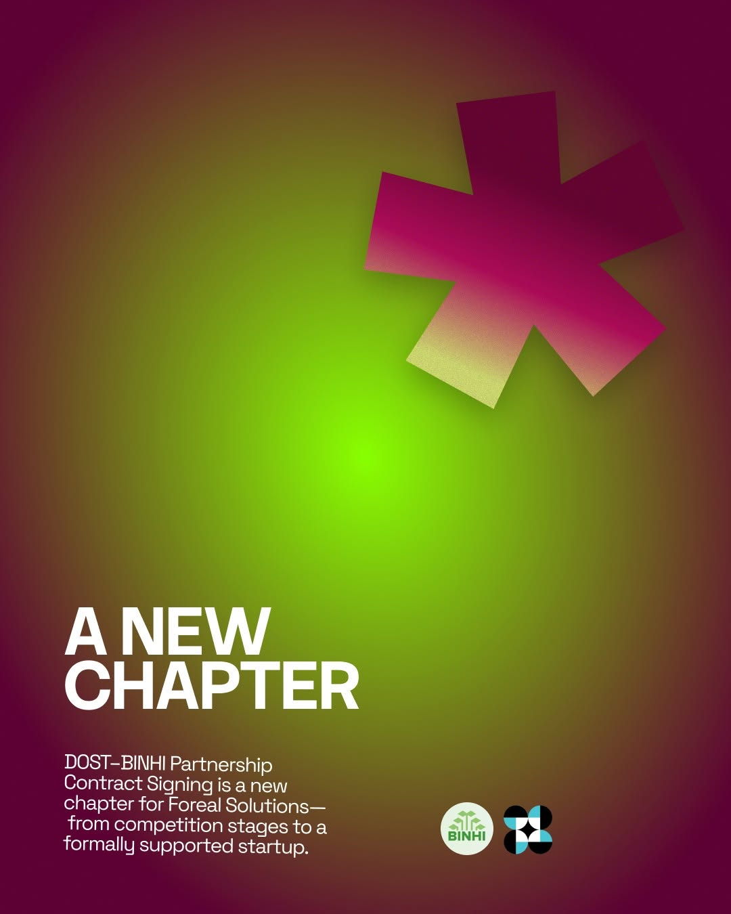
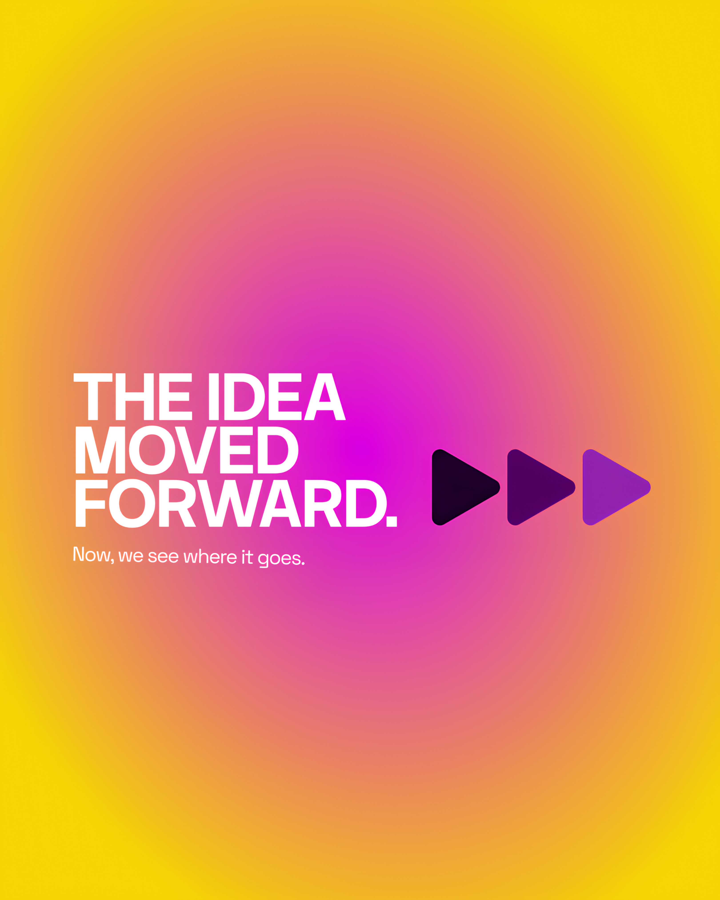
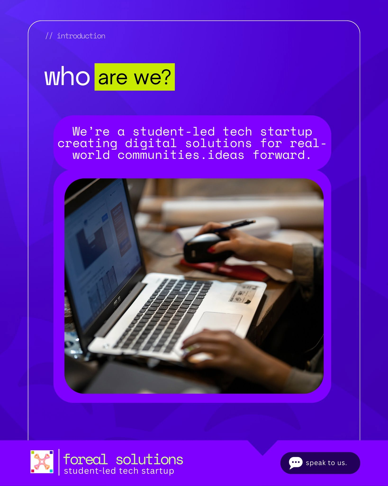

real problemsstudent energyuseful futuresby the peoplereal problemsstudent energyuseful futuresby the peoplereal problemsstudent energyuseful futuresby the people
01the why
Good ideas should leave the classroom.
Student-led innovation that stays useful after the pitch.
Mission. Make accessible digital tools with
communities, not just for them.
Vision. Move useful ideas from the classroom into
everyday life.
Student-Led Social Impact Digital Tools Accessibility Data-Driven Co-Creation
02four pillars
The mark is four directions meeting in the middle. So is the work.
01
Technology
Tools people can actually use.
02
Innovation
Better approaches to lived problems.
03
Collaboration
Building together, never in isolation.
04
Impact
Useful, accessible, socially meaningful outcomes.
Backed by partners who make it real

03how it became real
A competition idea became a starting point for practical,
real-world technology.
the challenge / 2025
Making food supply easier to understand.
At the DAP–NextGenPH Startup Challenge 2025, the team explored
challenges in food distribution. That work grew into AgriChain, a
decision-support system using predictive analytics and machine
learning to connect agricultural supply and demand. It became an
early example of Foreal’s focus on practical, data-driven
solutions for real-world needs.


the making
Built through iteration
Ideation and planning gave the team a direction; prototyping and
development helped turn it into something tangible. Feedback and
each new version moved the work closer to a useful solution.

03 / BINHI · Oct 28, 2025
A new chapter
With DOST and the WVSU BINHI Technology Business Incubator, the
team moved beyond competitions and into its next chapter.

04make it real
Before the pitch deck.
Sharp takes on building startups, managing projects, and making technology useful from the farm to the market.
The icebreaker. A Cornetto started the conversation. The question that stuck was why twenty pesos buys less at the market.
05the route
01
Listen close
We find the real tension underneath the brief.
02
Build small
We make something people can try, not just admire.
03
Learn fast
We use feedback as fuel for the next version.
06field notes / the blog
Notes from the build.
The people, projects, and partnerships moving Foreal’s ideas forward.

mission / vision
This is the real way
Foreal builds accessible, data-driven technology with people
and for the realities they live every day.